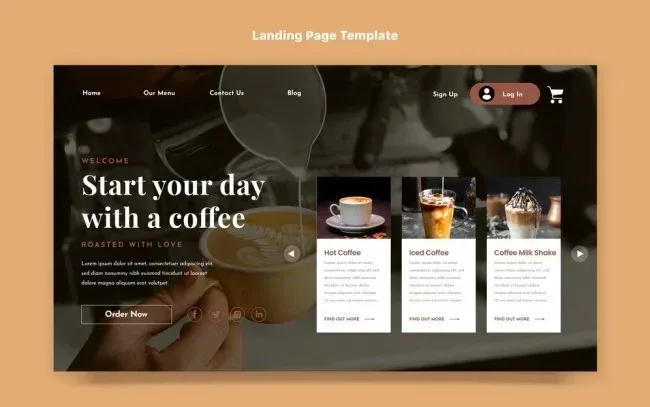
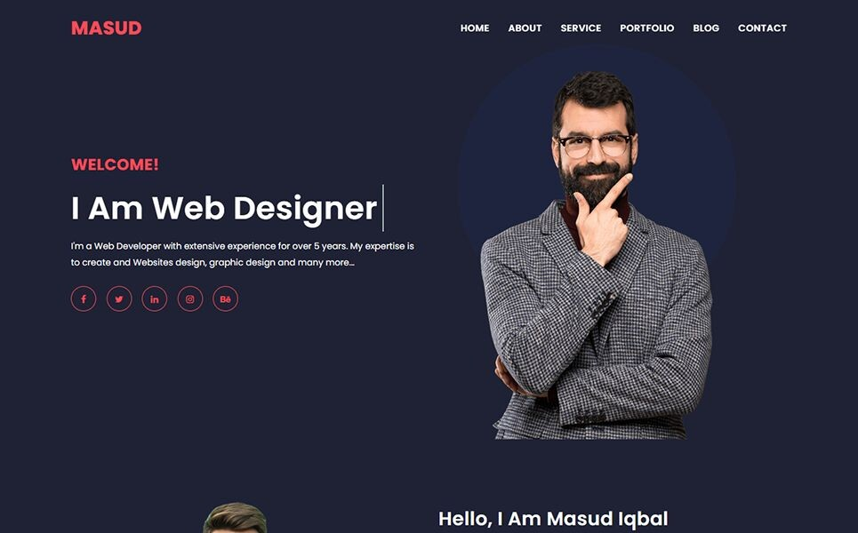

Kumpulan

Desain dashboard e-commerce
Membuat desain dashboard interaktif untuk platform e-commerce yang memudahkan pemantauan penjualan dan inventaris.

Membuat website coffe shop
Membuat website interaktif tampilan modern.

Portfolio Website
Membangun website portfolio interaktif menggunakan HTML, CSS, dan JavaScript modern.